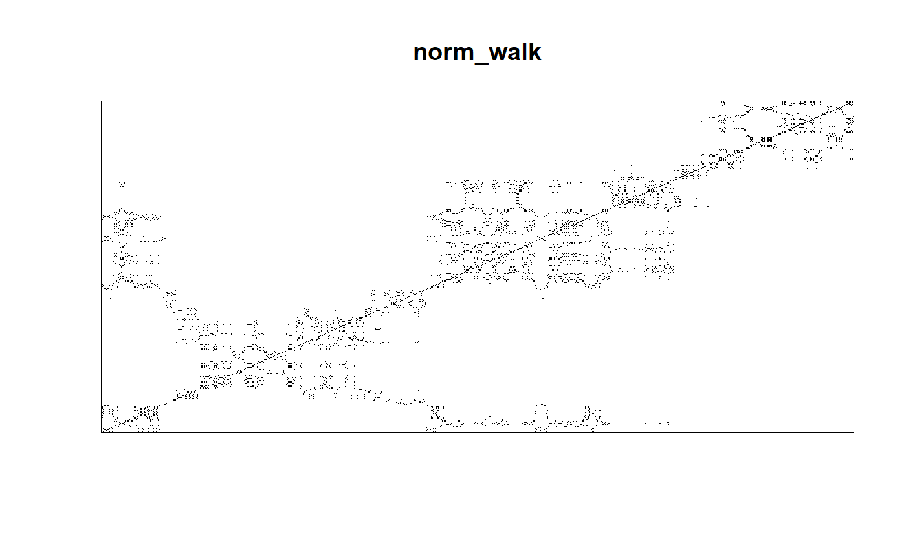
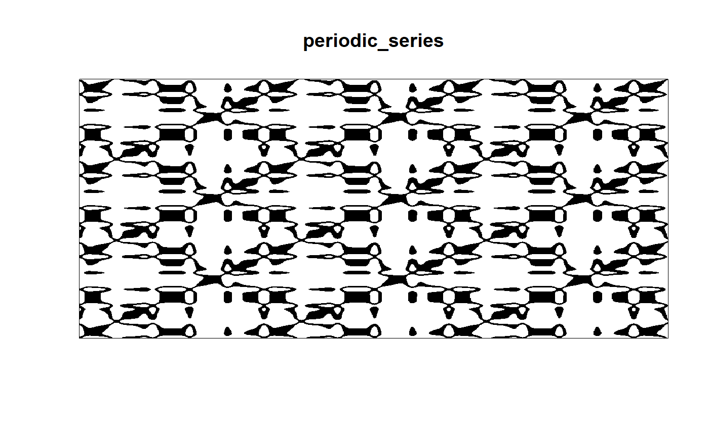

Analysis with complex networks
Source:vignettes/Analysis_with_complex_networks.Rmd
Analysis_with_complex_networks.Rmdlibrary(tsar)
library(purrr)
library(dplyr)
#>
#> Dołączanie pakietu: 'dplyr'
#> Następujące obiekty zostały zakryte z 'package:stats':
#>
#> filter, lag
#> Następujące obiekty zostały zakryte z 'package:base':
#>
#> intersect, setdiff, setequal, union
set.seed(8314)norm_walk <- cumsum(rnorm(1000))
cauchy_walk <- cumsum(rcauchy(1000, location = 0, scale = 0.1))
periodic_series <- sin(1:1000/50) +
cos(1:1000/20)^2 +
rnorm(1000, mean = 0.15, sd = 0.1)
time_series <- list(norm_walk, cauchy_walk, periodic_series)
time_series_names <- list("norm_walk", "cauchy_walk", "periodic_series")
time_series %>% map2(time_series_names, ~plot(.x, type = 'l', main = .y))
#> [[1]]
#> NULL
#>
#> [[2]]
#> NULL
#>
#> [[3]]
#> NULLVisibility Graph
visibility_graphs <- time_series %>% map(visibility_graph)Recurrence Graph
rec_matrix <- time_series %>% map(~recurrence_matrix(.x, eps = 0.3))
rec_matrix %>% map2(time_series_names,
~image(.x,
main = .y,
col=gray.colors(2, start = 1, end = 0),
xaxt='n',
yaxt='n'))
#> [[1]]
#> NULL
#>
#> [[2]]
#> NULL
#>
#> [[3]]
#> NULL